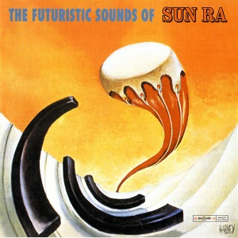

1962: Albums of the Year
-
Françoise Hardy
Tous les Garçons et les Filles
7¼
-
Stan Getz / Charlie Byrd
Jazz Samba
7
-
The John Coltrane Quartette
Coltrane
6½
-
Bob Dylan
Bob Dylan
6¼
-
Serge Gainsbourg
No. 4
5¾
-
Bill Evans / Jim Hall
Undercurrent
5¼
-
The Bill Evans Trio
Moon Beams
4½
-
Nina Simone
Nina at the Village Gate
4½
-

Sun Ra
The Futuristic Sounds of Sun Ra
4½
-
John Coltrane
Coltrane Plays the Blues
4¼
-
Herbie Hancock
Takin' Off
4¼
-
Nina Simone
Nina Simone Sings Ellington
4
-
Duke Ellington / Count Basie
First Time! The Count Meets the Duke
4
-

Stan Getz / Eddie Sauter
Focus
3¾
-
Shelly Manne / Bill Evans / Monty Budwig
Empathy
3½
-
John Coltrane
Standard Coltrane
3¼
-
Stan Getz
Big Band Bossa Nova
2¾
-
Milt Jackson / Wes Montgomery
Bags Meets Wes!
2¾
-
Cannonball Adderley / Bill Evans
Know What I Mean?
2¾
-
Steve Lacy
Evidence
2¾
-
Tony Bennett
I Left My Heart in San Francisco
2½
-
Jeanne Lee / Ran Blake
The Newest Sound Around
2½
-
Cliff Richard & The Shadows
32 Minutes and 17 Seconds With Cliff Richard
2½
-

Chet Baker Sextet
Chet Is Back!
1¾
-
Amália Rodrigues
Amália Rodrigues (Busto)
1½
-
Bo Diddley
Bo Diddley's a Twister
1½
-
The Beach Boys
Surfin' Safari
1¼
-
Little Stevie Wonder
The Jazz Soul of Little Stevie
1¼
-
The Red Garland Quintet / John Coltrane
Dig It!
1¼
-
Little Stevie Wonder
Tribute to Uncle Ray
1¼
-

Elvis Presley
Pot Luck
1
-
Elvis Presley
Girls! Girls! Girls!
0¾